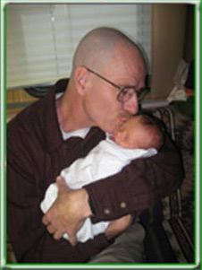
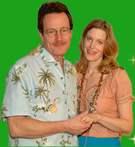

Walter White
Pai, Marido & Professor

-

- 
-


Meu pai é realmente incrível. Foi uma descoberta engraçada, mas só percebi isso quando
soube que ele estava enfrentando uma doença terminal. Essa notícia fez com que eu
refletisse sobre muitas coisas, coisas que eu não pensava há muito tempo.
Eu admito que antes talvez não valorizasse o suficiente o quão especial ele é, quase o considerando como
algo garantido ou natural.
É engraçado como nós tendemos a pensar que nossos pais
sempre estarão lá, nos apoiando, nos incomodando para limpar o quarto, estudar mais, ter
boas maneiras e nos encorajando a experimentar coisas novas para crescermos como
indivíduos completos.
Agora, até as coisas que costumavam me deixar louca, como ele nos acordar cedo no final
de semana para ter "tempo para a família", ganharam um novo significado. Sinto uma mistura
de gratidão e pesar, pois percebo o quão precioso é o tempo que temos com ele. Tudo mudou
desde que recebemos o diagnóstico.
A percepção de que um dia próximo ele pode não estar
mais por perto para me deixar louco me atinge profundamente.
A partir dessa experiência, aprendi a valorizar cada momento com meu pai e a enxergar
o quanto ele é fundamental em minha vida.
É como se essa situação difícil tivesse me mostrado uma nova perspectiva, ensinando-me a não dar nada como
garantido e a
apreciar as pessoas que são importantes para mim.
Afinal, a vida é preciosa e devemos aproveitar cada instante ao lado daqueles que amamos.
Agora me sinto afortunado quando ele me pergunta sobre o meu dia (eu costumava odiar completamente essa
pergunta) ou me incomoda para chegar em casa na hora certa à noite e ser responsável.
Um dia ele não estará mais aqui para perguntar.
Agora me sinto grato quando ouço seu carro entrando na garagem depois da escola.
Eu até gosto de ouvi-lo tossindo.
Isso significa que ele ainda está presente. Ainda é meu pai.
- 
-

Meu pai é professor de química na minha escola e ele é incrivelmente inteligente. Quero dizer, extremamente
inteligente e às vezes um pouco chato. Ele tem conhecimentos sobre as coisas mais aleatórias, como a
temperatura ambiente em que o mercúrio é o único metal que está na forma líquida. E ele sempre compartilha
fatos curiosos, como o fato de a água se expandir à medida que diminui a temperatura e ocupar cerca de 9% a
mais de espaço quando congela. Por exemplo, ele me mostrou que se você derramar lentamente um deslize de sal
em um copo de água totalmente cheio, o nível da água na verdade vai diminuir, em vez de transbordar.
Às vezes, ele não percebe o quanto é um nerd quando revela essas curiosidades, mas é evidente o quanto ele
realmente ama química. Ele gosta de cozinhar e sempre relaciona a culinária com a química, explicando como
reações calóricas acontecem o tempo todo na cozinha. Mesmo que eu não tenha aulas com ele na escola, ouvi
dizer que ele é um ótimo professor. Tenho certeza de que ele pratica muito em casa para oferecer o melhor
ensino possível. É inspirador ver o quanto ele se dedica à sua paixão pela química e compartilha esse
entusiasmo com os outros.
Meu pai é professor de química na minha escola e ele é irritantemente inteligente.
Quero dizer, super inteligente e chato. Ele sabe as coisas mais
aleatórias. Curtir
como à temperatura ambiente, o mercúrio é o único metal que está na forma líquida.
E a água se expande à medida que diminui a temperatura e, quando congela
ocupa cerca de 9% a mais de espaço. Ou que se você derramar lentamente um punhado de sal
em um copo de água totalmente cheio, não transbordará. Na verdade, o nível da água
vai cair. Ele está sempre revelando os pequenos fatos sobre tudo. Ele
não percebe o quão nerd ele é por fazer isso, ele realmente gosta de química.
Acho que ele realmente não entende que nem todo mundo é. Ele gosta de cozinhar
por causa da química - ele geralmente faz o café da manhã - porque ele diz química-
reações calóricas acontecem o tempo todo na cozinha e ele está sempre explicando enquanto
vai. Não tenho aulas com ele na escola, mas ouvi dizer que ele é um bom professor.
Ele pratica muito em casa, com certeza.
Durante todo o tempo em que estive no ensino médio (estou no segundo ano), sempre tive que ouvir o que
outras crianças pensavam sobre ele. Eu era sempre conhecido como o filho do Sr. White, apesar de alguns
chamarem ele de Sr. Wallabee, brincando sobre os sapatos que ele usa.
Algumas crianças o insultavam só para me irritar, enquanto outras simplesmente o insultavam porque é o que
algumas crianças fazem com os professores. O problema é que ele espera que todos façam o seu melhor, assim
como
ele, e quando você não se esforça ao máximo, ele não lhe dá nenhuma folga. Isso é como ele age tanto em casa
quanto na escola, e agora percebo o valor dessa atitude exigente. Isso o torna corajoso em sua batalha
contra o
câncer e também me deu coragem quando eu era mais jovem, quer eu quisesse ou não.
De qualquer forma, sempre quis ser uma criança normal na escola, mas por causa de meu pai sendo professor
lá, eu
me sentia diferente. Agora percebo duas coisas importantes. Primeiro, já sou diferente por causa da minha
condição, a C.P., e isso não é um problema. E segundo, ele é o pai certo para mim. Ele não se preocupa com
as
limitações físicas que tenho devido à minha deficiência, e isso não seria verdade para muitos outros pais
que
conheci. Eles ficariam desapontados porque não posso praticar esportes ou outras atividades físicas, mas meu
pai
compreende isso. É claro que ele também tem suas limitações, como não ser habilidoso em esportes, mas nós
nos
damos bem dessa forma.
Agora, não me importo com o que as crianças na escola dizem. O ponto principal é que ele é um bom professor
e
ninguém pode negar que ele se importa com o que faz. Seu amor pela química e por ensinar crianças é inegável
e
inspirador. Quero garantir que ele continue fazendo o que ama por muito tempo, para ele, para seus alunos, e
para mim e minha família. Seu entusiasmo e dedicação são um exemplo para todos nós, e estou orgulhoso de ser
seu
filho.
Tem sido um período muito difícil para nossa família desde que meu pai foi diagnosticado com câncer. Não que
haja um momento certo para algo tão terrível e assustador, mas, certamente, foi uma época desafiadora para
nós. Minha mãe estava grávida do que ela chama de "bebê surpresa" (que agora é a Holly, uma bebê
recém-nascida realmente fofa), e meu pai estava trabalhando em um emprego extra após a escola para tentar
ajudar a pagar todas as contas normais. E isso foi antes de recebermos o diagnóstico.
Nós não temos muitos recursos financeiros, mas estávamos administrando até que as contas médicas começaram a
se acumular. Meu pai é muito orgulhoso - ok, extremamente orgulhoso - e não quer aceitar caridade. É por
isso que estou fazendo isso. Não é porque quero deixá-lo bravo ou chateado, mas sim porque quero que ele
tenha uma chance de lutar, não importa o que aconteça.
Agora, mais do que nunca, é crucial para nossa família se unir e encontrar uma maneira de enfrentar essa
situação difícil juntos. A batalha contra o câncer é árdua, mas com amor, apoio e perseverança, tenho
esperança de que possamos superar esse desafio. Estou disposto a fazer o que for preciso para ajudar meu pai
a ter uma chance justa na luta contra essa doença. Nossa família é forte, e juntos somos capazes de
enfrentar qualquer obstáculo que a vida nos apresente.
Uma coisa que não entendo é por que salvar a vida de alguém custa mais do que uma pessoa normal pode pagar.
E por que alguns médicos (geralmente os melhores) não aceitam seguro. Acho isso injusto. Quero dizer, uma
das principais razões pelas quais meu pai não queria receber tratamento em primeiro lugar é porque ele não
queria nos deixar com uma dívida enorme. Essa é uma característica do meu pai - ele nos ama mais do que
tudo, mais do que a si mesmo. Mas nós queremos que ele esteja por perto e que ele tente tudo o que puder
para ficar conosco o maior tempo possível. Esta cirurgia é a única chance de salvar sua vida. E nós não
podemos pagar. E a cada dia que passa, temos um dia a menos com ele. E eu não quero ter que contar para
minha irmãzinha sobre a situação do meu pai, eu quero que ela o conheça por si mesma.
É angustiante ver como o sistema de saúde pode dificultar o acesso ao tratamento vital para aqueles que
precisam. Todos deveriam ter a oportunidade de receber os cuidados necessários para preservar a vida,
independentemente de sua situação financeira. Acredito que todos os esforços devem ser feitos para garantir
que ninguém seja impedido de receber tratamento adequado por causa de questões financeiras. É uma situação
dolorosa para nós, sabendo que a vida de meu pai está em jogo e que não temos meios para pagar pelo
tratamento que ele precisa.
Neste momento difícil, devemos permanecer unidos como família e buscar qualquer ajuda possível para garantir
que meu pai receba a atenção médica necessária. Cada minuto conta, e é importante que tomemos todas as
medidas possíveis para obter o tratamento adequado para ele. Acreditamos no poder do amor e do apoio
familiar, e esperamos que, com a ajuda da comunidade e de recursos disponíveis, possamos superar essa
difícil situação juntos. O desejo de que minha irmãzinha tenha a oportunidade de conhecer e desfrutar de
momentos preciosos com meu pai é algo que nos motiva a buscar soluções e apoio em cada passo desse caminho
desafiador.
Eu tenho um pai maravilhoso,
Mas ele está com problemas.
Está com Câncer no pulmão.
Ele precisa de uma operação. Agora!
Para ajudar, envie sua contribuição
ao nosso fundo operacional
e mantenha meu pai em suas orações!
ESTAREI IMENSAMENTE GRATO POR QUALQUER VALOR.!
Totais de Visitantes: